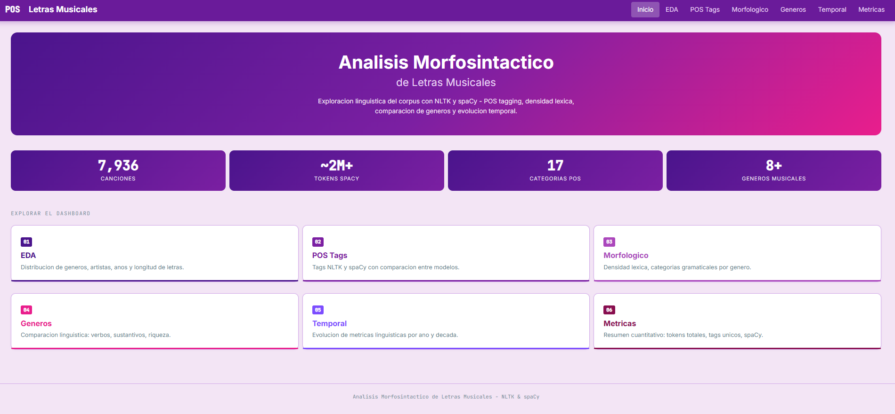

Este proyecto fue desarrollado para explorar patrones lingüísticos en un corpus de 7,936 canciones de distintos géneros musicales. El objetivo principal es visualizar información sobre la estructura literaria del lenguaje musical: ¿qué categorías gramaticales dominan en el reggaeton versus el rock? ¿Ha cambiado la riqueza léxica a lo largo de las décadas?
El sistema procesa letras de canciones en texto plano, aplica limpieza y normalización, luego ejecuta NLTK y spaCy para obtener el POS tag (categoría gramatical) de cada token. Los resultados se agregan por género, artista y año.
El dashboard web resultante tiene 6 secciones: EDA (exploración de géneros, artistas y longitud), POS Tags (comparación NLTK vs spaCy), Análisis Morfológico (densidad léxica), Géneros (comparación lingüística), Evolución Temporal y Métricas globales. Procesa aproximadamente 2 millones de tokens en total.